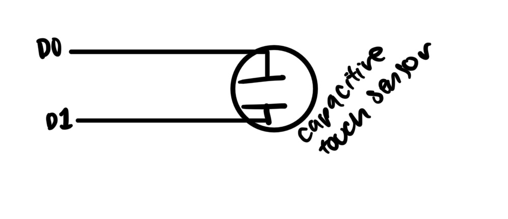
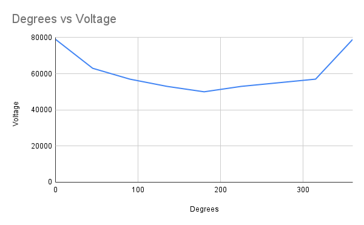
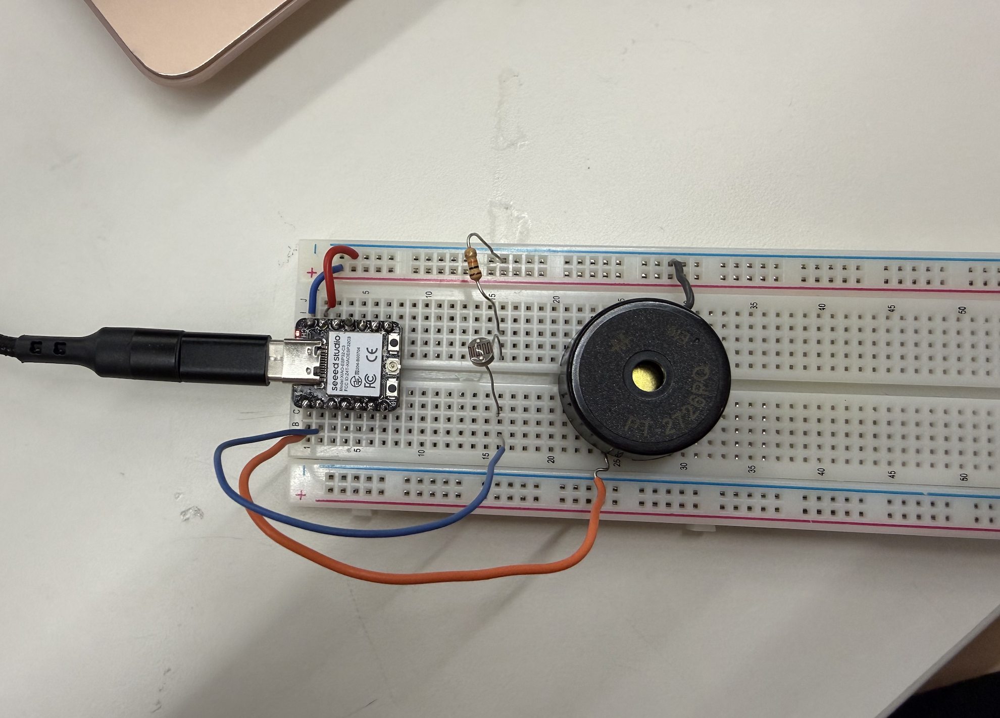
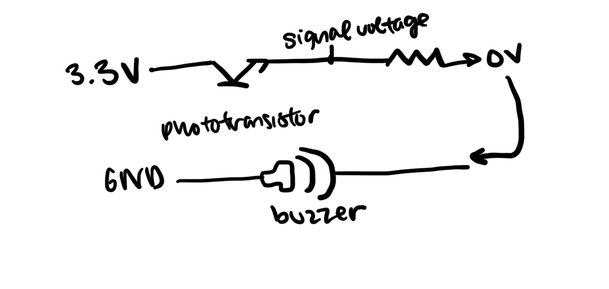
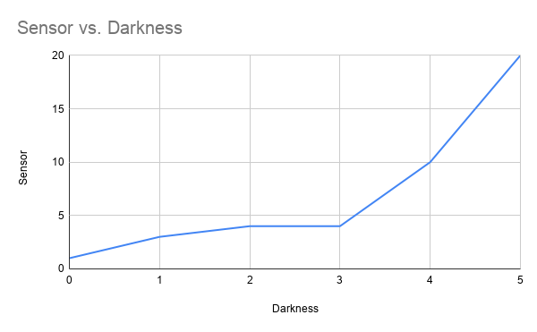

Week 6: Electronic Input Devices
Backgroud
While I've previously used buttons, speakers, and LEDs - it was helpful to understand how they all work. Especially capacitance. Below we made the angle detector using capacitance, and I used a light sensor.
Capacitive Sensor




The closer the capacitive sensors, the higher the voltage. The graph makes sense because there is a furthest angle with a lowest voltage.
Light Sensor



Description Light
Prep for CNC Week


CNC Design Idea
Download CNC DXF File